Раніше ми дізналися, як підключити Bootstrap, створити в ньому свій шаблон, оформити таблиці і елементи форм. Крім того, фреймворк додає нові стилі для звичайного тексту і малих елементів. Він визначає стандартний розмір будь-якого тексту всередині тега <body> в 14px і висоту рядка в 1,428. Для абзаців змінюються зовнішні відступи (margin) зверху і знизу: тепер це половина висоти рядка, за замовчуванням 10px.
Давайте подивимося на приклади і розберемося з текстом в бутстрапа.
Заголовки в бутстрапі на вигляд такі:
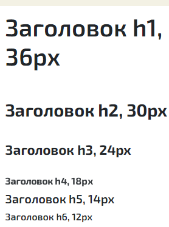
Також можна додати пояснювальний текст в тег <small> й розмістити його в заголовку, він буде таким:
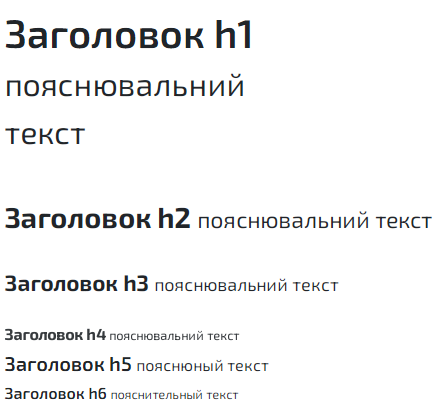
Елемент <mark> будеоформлено в такому стилі:
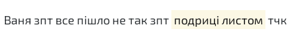
Бутстрап має набір класів для вирівнювання текстів:
<p class="text-left">Рівняння по лівому краю</p> <p class="text-center">Текст по центру</p> <p class="text-right">Рівняння по правому краю</p> <p class="text-justify">Рівняння по обом краям</p> <p class="text-nowrap">Текст без перенесення</p>
Більше не потрібно додавати додаткові класи для рівняння з різними варіантами text-align в css.
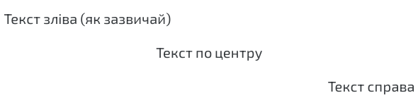
Цитати в Bootstrap на вигляд такі:
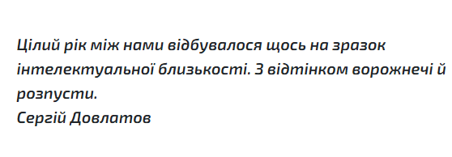
Код прикладу:
<blockquote> Цілий рік між нами відбувалося щось на зразок інтелектуальної близькості. З відтінком ворожнечі і розпусти. <footer>Сергій Довлатов</footer> </blockquote>
Щоб додати цитаті рівняння по правому краю, додайте їй клас .blockquote-reverse:
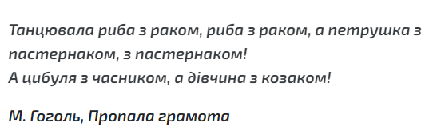
Трансформувати текст можна простим додаванням класів: нижній, верхній регістр і великі літери.
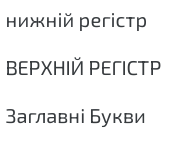
<p class="text-lowercase">нижній регістр</p> <p class="text-uppercase">верхній регістр</p> <p class="text-capitalize">заглавні букви</p>
Список описів — не найбільш популярний тег, але його можна зручно використовувати для швидкого створення списків з поясненнями.
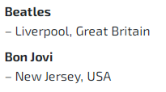
<dl> <dt>Beatles</dt> <dd>- Liverpool, Great Britain</dd> <dt>Bon Jovi</dt> <dd>- New Jersey, USA</dd> </dl>
Bootstrap додає строчним елементам <code> контрастний стиль, фон і червоний колір:
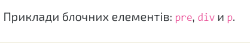
Код прикладу:
Приклади блочних елементів: <code>pre</code>, <code>div</code> і <code>p</code>.
В бутстрапі є набір класів для виділення тексту кольором або фоном: .text-muted, .text-primary, .text-success, .text-info, .text-warning, і .text-danger.
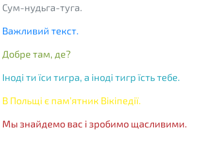
<p class="text-muted">Сум-нудьга-туга.</p> <p class="text-primary">Важливий текст.</p> <p class="text-success">Добре там, де?</p> <p class="text-info">Іноді ти їси тигра, а іноді тигр їсть тебе.</p> <p class="text-warning">В Польщі є пам'ятник Вікіпедії.</p> <p class="text-danger">Мы знайдемо вас і зробимо щасливими.</p>
Класи для контекстного фону такі: .bg-primary, .bg-success, .bg-info, .bg-warning, і .bg-danger.
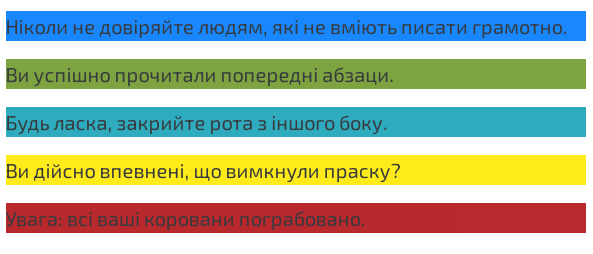
Ось вам загальний список класів, якими можна користуватися в бутстрапі для оформлення текстів і інших елементів.
| Клас | Опис |
|---|---|
.lead |
Виділяє параграф збільшенням розміру тексту |
.small |
Зменшує розмір тексту до 85% від батьківського елемента |
.text-left |
Рівняння тексту по лівому краю |
.text-center |
Центровка тексту |
.text-right |
Рівняння тексту по правому краю |
.text-justify |
Рівняння текста по левому і правому краям |
.text-nowrap |
Текст без переносів строк |
.text-lowercase |
Текст в нижньому регістрі |
.text-uppercase |
Текст в верхньому регістрі |
.text-capitalize |
Кожне Слово З Великої Букви |
.list-unstyled |
Прибирає стандартне оформлення для списку і відступи для його елементів. Працює як для <ul>, так і для <ol>. Стилі заберуться тільки для елементів першого рівня вкладеності. Щоб прибрати стилі для іншої вкладеності, використовуйте це клас знову для їхніх батьківських елементів. |
.list-inline |
Відображає всі елементи списку в один рядок, перетворюючи їх на малі |
.dl-horizontal |
Використовується для terms (<dt>) і descriptions (<dl>) в <dl> (списку описів, description list). Замість вертикального відображення опису під заголовком пари розташовуються горизонтально. У випадках невеликих екранів списки описів з таким класом будуть відображатися як зазвичай, вертикально орієнтованими. |